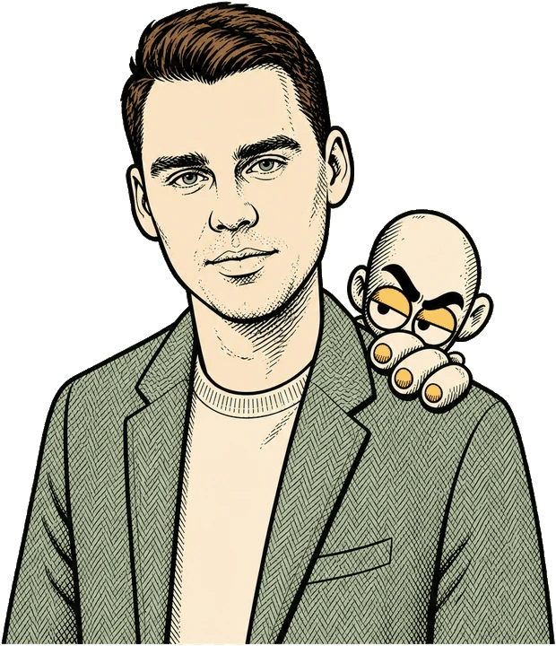
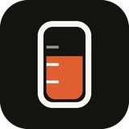
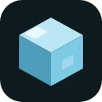
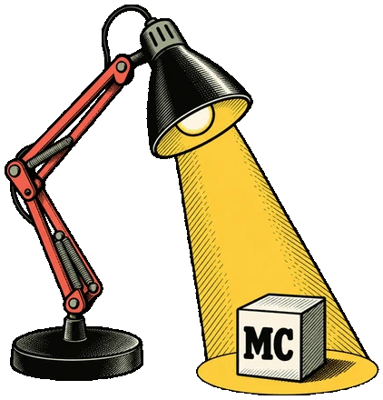
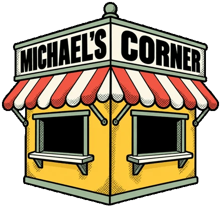

Tuck
Chrome extensionHides all your other extensions behind one icon with a clean dropdown. Your toolbar stops looking like a cockpit.
Every week a new model drops and Instagram Reels tell you that you are already behind. You are not. I use these tools most evenings and write down what actually works, free for you to take.

Free, all of it No signupThe apps I have built with AI in the evenings, and the same ones I use myself every day.
Hides all your other extensions behind one icon with a clean dropdown. Your toolbar stops looking like a cockpit.
Your desktop, restored in one click. Reopens the apps, files, and Chrome profiles for a saved workspace and puts each window back where you set it.

Shows how much of your Claude usage is left, up in the menu bar. It reads the live numbers. You see when the five-hour window resets instead of finding out by hitting the limit.

Freezes tabs you have not touched in a while using Chrome's own discard. A sixty-tab window stops costing what a sixty-tab window costs. Every tab keeps its address, its title and its full history.
A first draft comes together in minutes and that part feels like magic. Then the real work starts: the checking, the fixing and the small calls only you can make. Most of the time goes there, and none of it gets automated. The shortcuts on this site are for the fast part.

Free calculators and checkers that run in your browser: what a month of AI costs, whether your text fits, when a task is worth automating. Type into one and nothing leaves the page.
What a month of AI actually costs, on rates you can edit.
Open the tool ↗ TOOL/02Whether your document fits a model's window or needs splitting.
Open the tool ↗ TOOL/03Your usage, both prices, one answer: which way is cheaper and where the lines cross.
Open the tool ↗ TOOL/04Six honest questions, one stamped verdict: automate now, assist only, or leave it human. Weights are published.
Open the tool ↗ TOOL/05Paste text; a public rule list counts the AI tells and stamps a slop score, every flagged line shown.
Open the tool ↗Copy one, fill in the brackets and paste it into ChatGPT, Claude or Gemini. These are the ones I reach for most, out of the sixty-four in the full library.
Start here. Simple prompts that work on your first day with ChatGPT or Claude. Copy one, fill in the brackets and paste it in.
Open pack ↗Draft faster and still sound like yourself. These keep your voice, cut the filler and stop your text from reading like something a machine wrote.
Open pack ↗Go from a rough idea to working software even if you do not code. Plan small, brief the AI properly, and get unstuck when it breaks. It will break.
Open pack ↗For people running a small business: customers, reviews, numbers and suppliers, plus the messages you keep putting off, drafted so you can actually send them.
Open pack ↗Short videos of real builds, the dead ends included. I am filming now and the cards get their links as episodes go up.
What happened, what broke, and what I would skip next time.
A full build, from empty folder to live page.
Pick a tiny idea and get it working in two days.
No planning week. Just open the laptop and build it.
The full thing is written out on the kit page before any email is asked for: the prompts I reuse, the model guide, the first-hour walkthrough, the cost cheat sheet and the rest.
